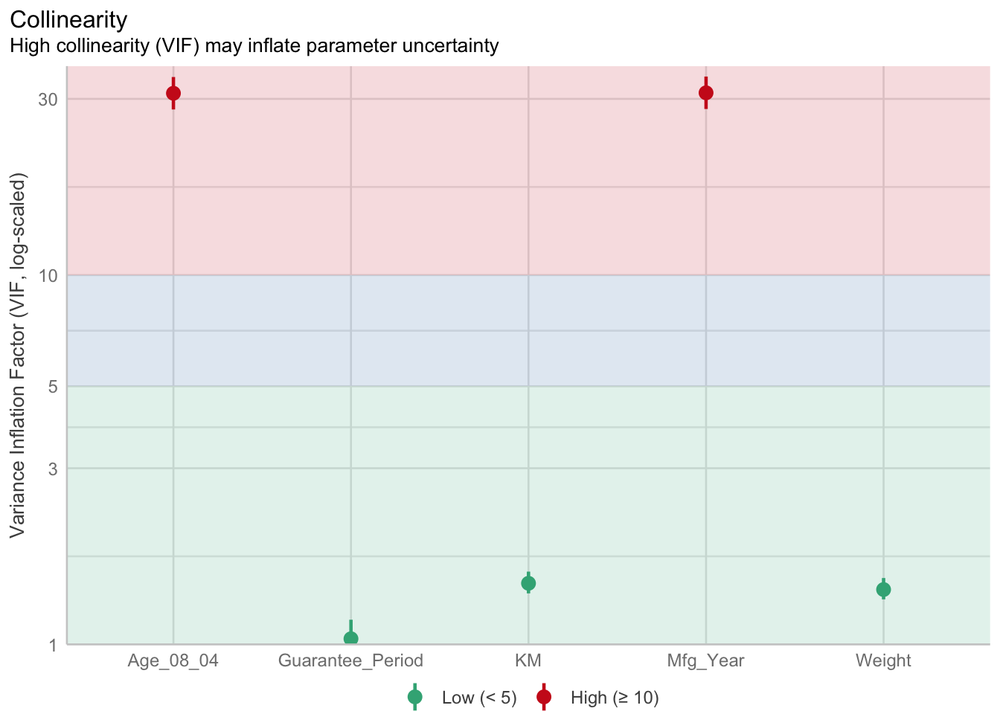
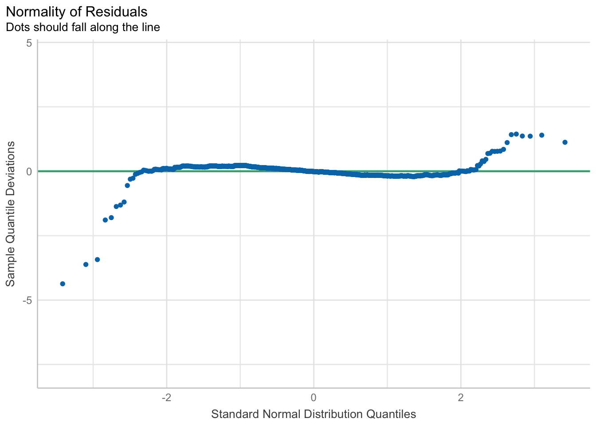
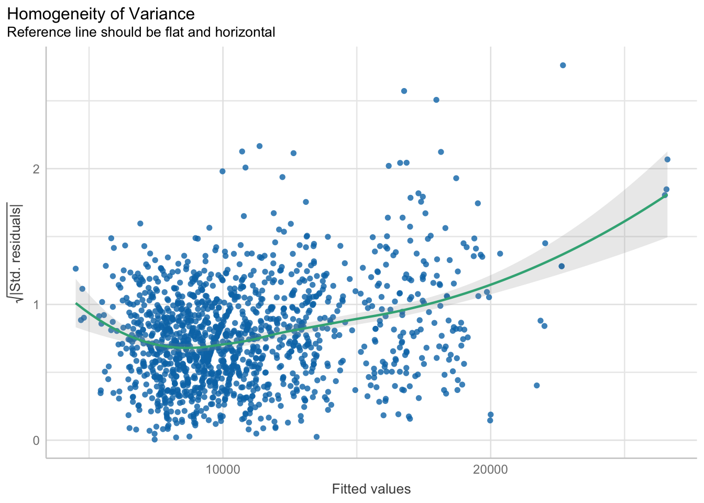
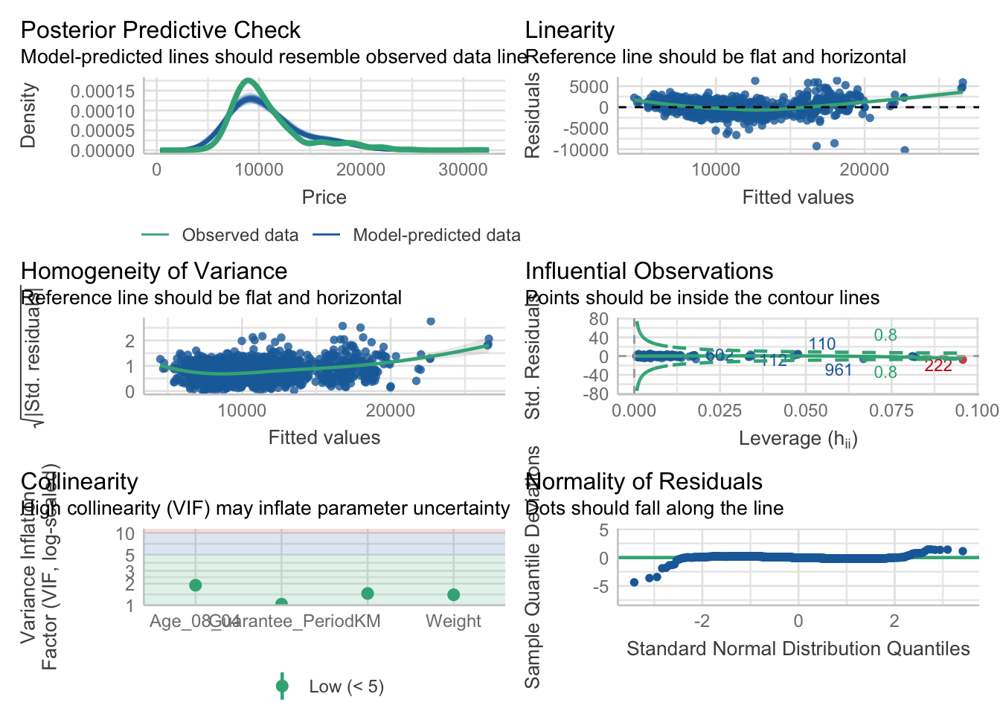
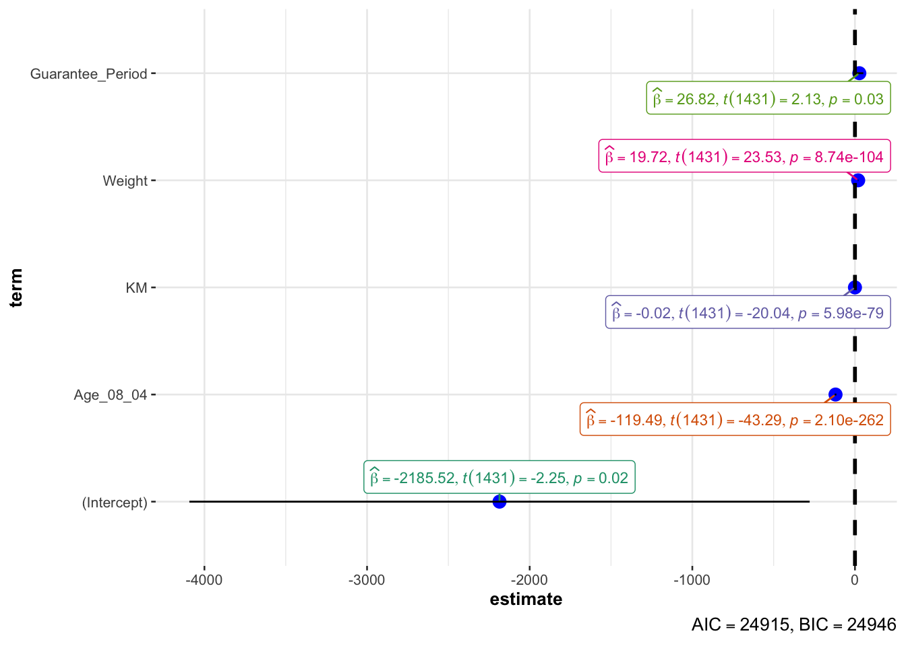

pacman::p_load(readxl, SmartEDA, tidyverse,
ggstatsplot, easystats, tidymodels,parameters, see)Hands-on_Ex04d— Visualising Models
1 Introduction
In this section, we will learn how to visualise model diagnostic and model parameters by using parameters package.
2 Visual Anaslytics for Building Better Explanatory Models
2.1 The case
Toyota Corolla case study will be used. The purpose of study is to build a model to discover factors affecting prices of used-cars by taking into consideration a set of explanatory variables.
3 Getting Started
In the code chunk below, read_xls() of readxl package is used to import the data worksheet of ToyotaCorolla.xls workbook into R.
car_resale <- read_xls("data/ToyotaCorolla.xls",
"data")
car_resale# A tibble: 1,436 × 38
Id Model Price Age_08_04 Mfg_Month Mfg_Year KM Fuel_Type HP
<dbl> <chr> <dbl> <dbl> <dbl> <dbl> <dbl> <chr> <dbl>
1 1 TOYOTA Coroll… 13500 23 10 2002 46986 Diesel 90
2 2 TOYOTA Coroll… 13750 23 10 2002 72937 Diesel 90
3 3 TOYOTA Corol… 13950 24 9 2002 41711 Diesel 90
4 4 TOYOTA Coroll… 14950 26 7 2002 48000 Diesel 90
5 5 TOYOTA Coroll… 13750 30 3 2002 38500 Diesel 90
6 6 TOYOTA Coroll… 12950 32 1 2002 61000 Diesel 90
7 7 TOYOTA Corol… 16900 27 6 2002 94612 Diesel 90
8 8 TOYOTA Coroll… 18600 30 3 2002 75889 Diesel 90
9 9 TOYOTA Corol… 21500 27 6 2002 19700 Petrol 192
10 10 TOYOTA Corol… 12950 23 10 2002 71138 Diesel 69
# ℹ 1,426 more rows
# ℹ 29 more variables: Met_Color <dbl>, Color <chr>, Automatic <dbl>, CC <dbl>,
# Doors <dbl>, Cylinders <dbl>, Gears <dbl>, Quarterly_Tax <dbl>,
# Weight <dbl>, Mfr_Guarantee <dbl>, BOVAG_Guarantee <dbl>,
# Guarantee_Period <dbl>, ABS <dbl>, Airbag_1 <dbl>, Airbag_2 <dbl>,
# Airco <dbl>, Automatic_airco <dbl>, Boardcomputer <dbl>, CD_Player <dbl>,
# Central_Lock <dbl>, Powered_Windows <dbl>, Power_Steering <dbl>, …Notice that the output object car_resale is a tibble data frame.
summary(car_resale) Id Model Price Age_08_04
Min. : 1.0 Length:1436 Min. : 4350 Min. : 1.00
1st Qu.: 361.8 Class :character 1st Qu.: 8450 1st Qu.:44.00
Median : 721.5 Mode :character Median : 9900 Median :61.00
Mean : 721.6 Mean :10731 Mean :55.95
3rd Qu.:1081.2 3rd Qu.:11950 3rd Qu.:70.00
Max. :1442.0 Max. :32500 Max. :80.00
Mfg_Month Mfg_Year KM Fuel_Type
Min. : 1.000 Min. :1998 Min. : 1 Length:1436
1st Qu.: 3.000 1st Qu.:1998 1st Qu.: 43000 Class :character
Median : 5.000 Median :1999 Median : 63390 Mode :character
Mean : 5.549 Mean :2000 Mean : 68533
3rd Qu.: 8.000 3rd Qu.:2001 3rd Qu.: 87021
Max. :12.000 Max. :2004 Max. :243000
HP Met_Color Color Automatic
Min. : 69.0 Min. :0.0000 Length:1436 Min. :0.00000
1st Qu.: 90.0 1st Qu.:0.0000 Class :character 1st Qu.:0.00000
Median :110.0 Median :1.0000 Mode :character Median :0.00000
Mean :101.5 Mean :0.6748 Mean :0.05571
3rd Qu.:110.0 3rd Qu.:1.0000 3rd Qu.:0.00000
Max. :192.0 Max. :1.0000 Max. :1.00000
CC Doors Cylinders Gears Quarterly_Tax
Min. : 1300 Min. :2.000 Min. :4 Min. :3.000 Min. : 19.00
1st Qu.: 1400 1st Qu.:3.000 1st Qu.:4 1st Qu.:5.000 1st Qu.: 69.00
Median : 1600 Median :4.000 Median :4 Median :5.000 Median : 85.00
Mean : 1577 Mean :4.033 Mean :4 Mean :5.026 Mean : 87.12
3rd Qu.: 1600 3rd Qu.:5.000 3rd Qu.:4 3rd Qu.:5.000 3rd Qu.: 85.00
Max. :16000 Max. :5.000 Max. :4 Max. :6.000 Max. :283.00
Weight Mfr_Guarantee BOVAG_Guarantee Guarantee_Period
Min. :1000 Min. :0.0000 Min. :0.0000 Min. : 3.000
1st Qu.:1040 1st Qu.:0.0000 1st Qu.:1.0000 1st Qu.: 3.000
Median :1070 Median :0.0000 Median :1.0000 Median : 3.000
Mean :1072 Mean :0.4095 Mean :0.8955 Mean : 3.815
3rd Qu.:1085 3rd Qu.:1.0000 3rd Qu.:1.0000 3rd Qu.: 3.000
Max. :1615 Max. :1.0000 Max. :1.0000 Max. :36.000
ABS Airbag_1 Airbag_2 Airco
Min. :0.0000 Min. :0.0000 Min. :0.0000 Min. :0.0000
1st Qu.:1.0000 1st Qu.:1.0000 1st Qu.:0.0000 1st Qu.:0.0000
Median :1.0000 Median :1.0000 Median :1.0000 Median :1.0000
Mean :0.8134 Mean :0.9708 Mean :0.7228 Mean :0.5084
3rd Qu.:1.0000 3rd Qu.:1.0000 3rd Qu.:1.0000 3rd Qu.:1.0000
Max. :1.0000 Max. :1.0000 Max. :1.0000 Max. :1.0000
Automatic_airco Boardcomputer CD_Player Central_Lock
Min. :0.00000 Min. :0.0000 Min. :0.0000 Min. :0.0000
1st Qu.:0.00000 1st Qu.:0.0000 1st Qu.:0.0000 1st Qu.:0.0000
Median :0.00000 Median :0.0000 Median :0.0000 Median :1.0000
Mean :0.05641 Mean :0.2946 Mean :0.2187 Mean :0.5801
3rd Qu.:0.00000 3rd Qu.:1.0000 3rd Qu.:0.0000 3rd Qu.:1.0000
Max. :1.00000 Max. :1.0000 Max. :1.0000 Max. :1.0000
Powered_Windows Power_Steering Radio Mistlamps
Min. :0.000 Min. :0.0000 Min. :0.0000 Min. :0.000
1st Qu.:0.000 1st Qu.:1.0000 1st Qu.:0.0000 1st Qu.:0.000
Median :1.000 Median :1.0000 Median :0.0000 Median :0.000
Mean :0.562 Mean :0.9777 Mean :0.1462 Mean :0.257
3rd Qu.:1.000 3rd Qu.:1.0000 3rd Qu.:0.0000 3rd Qu.:1.000
Max. :1.000 Max. :1.0000 Max. :1.0000 Max. :1.000
Sport_Model Backseat_Divider Metallic_Rim Radio_cassette
Min. :0.0000 Min. :0.0000 Min. :0.0000 Min. :0.0000
1st Qu.:0.0000 1st Qu.:1.0000 1st Qu.:0.0000 1st Qu.:0.0000
Median :0.0000 Median :1.0000 Median :0.0000 Median :0.0000
Mean :0.3001 Mean :0.7702 Mean :0.2047 Mean :0.1455
3rd Qu.:1.0000 3rd Qu.:1.0000 3rd Qu.:0.0000 3rd Qu.:0.0000
Max. :1.0000 Max. :1.0000 Max. :1.0000 Max. :1.0000
Tow_Bar
Min. :0.0000
1st Qu.:0.0000
Median :0.0000
Mean :0.2779
3rd Qu.:1.0000
Max. :1.0000 glimpse(car_resale)Rows: 1,436
Columns: 38
$ Id <dbl> 1, 2, 3, 4, 5, 6, 7, 8, 9, 10, 11, 12, 13, 14, 15, 16…
$ Model <chr> "TOYOTA Corolla 2.0 D4D HATCHB TERRA 2/3-Doors", "TOY…
$ Price <dbl> 13500, 13750, 13950, 14950, 13750, 12950, 16900, 1860…
$ Age_08_04 <dbl> 23, 23, 24, 26, 30, 32, 27, 30, 27, 23, 25, 22, 25, 3…
$ Mfg_Month <dbl> 10, 10, 9, 7, 3, 1, 6, 3, 6, 10, 8, 11, 8, 2, 1, 5, 3…
$ Mfg_Year <dbl> 2002, 2002, 2002, 2002, 2002, 2002, 2002, 2002, 2002,…
$ KM <dbl> 46986, 72937, 41711, 48000, 38500, 61000, 94612, 7588…
$ Fuel_Type <chr> "Diesel", "Diesel", "Diesel", "Diesel", "Diesel", "Di…
$ HP <dbl> 90, 90, 90, 90, 90, 90, 90, 90, 192, 69, 192, 192, 19…
$ Met_Color <dbl> 1, 1, 1, 0, 0, 0, 1, 1, 0, 0, 0, 0, 0, 1, 1, 0, 1, 1,…
$ Color <chr> "Blue", "Silver", "Blue", "Black", "Black", "White", …
$ Automatic <dbl> 0, 0, 0, 0, 0, 0, 0, 0, 0, 0, 0, 0, 0, 0, 0, 0, 0, 0,…
$ CC <dbl> 2000, 2000, 2000, 2000, 2000, 2000, 2000, 2000, 1800,…
$ Doors <dbl> 3, 3, 3, 3, 3, 3, 3, 3, 3, 3, 3, 3, 3, 3, 3, 3, 3, 3,…
$ Cylinders <dbl> 4, 4, 4, 4, 4, 4, 4, 4, 4, 4, 4, 4, 4, 4, 4, 4, 4, 4,…
$ Gears <dbl> 5, 5, 5, 5, 5, 5, 5, 5, 5, 5, 6, 6, 6, 6, 6, 6, 5, 5,…
$ Quarterly_Tax <dbl> 210, 210, 210, 210, 210, 210, 210, 210, 100, 185, 100…
$ Weight <dbl> 1165, 1165, 1165, 1165, 1170, 1170, 1245, 1245, 1185,…
$ Mfr_Guarantee <dbl> 0, 0, 1, 1, 1, 0, 0, 1, 0, 0, 1, 1, 1, 1, 1, 0, 0, 0,…
$ BOVAG_Guarantee <dbl> 1, 1, 1, 1, 1, 1, 1, 1, 1, 1, 1, 1, 1, 1, 1, 1, 1, 0,…
$ Guarantee_Period <dbl> 3, 3, 3, 3, 3, 3, 3, 3, 3, 3, 12, 3, 3, 3, 3, 3, 3, 1…
$ ABS <dbl> 1, 1, 1, 1, 1, 1, 1, 1, 1, 1, 1, 1, 1, 1, 1, 1, 1, 1,…
$ Airbag_1 <dbl> 1, 1, 1, 1, 1, 1, 1, 1, 1, 1, 1, 1, 1, 1, 1, 1, 1, 1,…
$ Airbag_2 <dbl> 1, 1, 1, 1, 1, 1, 1, 1, 0, 1, 1, 1, 1, 1, 1, 1, 1, 0,…
$ Airco <dbl> 0, 1, 0, 0, 1, 1, 1, 1, 1, 1, 1, 1, 1, 1, 1, 1, 1, 1,…
$ Automatic_airco <dbl> 0, 0, 0, 0, 0, 0, 0, 0, 0, 0, 1, 1, 1, 1, 1, 1, 1, 0,…
$ Boardcomputer <dbl> 1, 1, 1, 1, 1, 1, 1, 1, 0, 1, 0, 1, 1, 1, 1, 1, 1, 0,…
$ CD_Player <dbl> 0, 1, 0, 0, 0, 0, 0, 1, 0, 0, 1, 0, 0, 1, 1, 0, 1, 0,…
$ Central_Lock <dbl> 1, 1, 0, 0, 1, 1, 1, 1, 1, 0, 1, 1, 1, 1, 1, 1, 1, 1,…
$ Powered_Windows <dbl> 1, 0, 0, 0, 1, 1, 1, 1, 1, 0, 1, 1, 1, 1, 1, 1, 1, 1,…
$ Power_Steering <dbl> 1, 1, 1, 1, 1, 1, 1, 1, 1, 1, 1, 1, 1, 1, 1, 1, 1, 1,…
$ Radio <dbl> 0, 0, 0, 0, 0, 0, 0, 0, 1, 0, 0, 0, 0, 0, 0, 0, 0, 1,…
$ Mistlamps <dbl> 0, 0, 0, 0, 1, 1, 0, 0, 0, 0, 0, 1, 1, 1, 1, 1, 1, 0,…
$ Sport_Model <dbl> 0, 0, 0, 0, 0, 0, 1, 0, 0, 0, 0, 1, 1, 1, 1, 1, 0, 0,…
$ Backseat_Divider <dbl> 1, 1, 1, 1, 1, 1, 1, 1, 0, 1, 0, 1, 1, 1, 1, 1, 1, 0,…
$ Metallic_Rim <dbl> 0, 0, 0, 0, 0, 0, 0, 0, 1, 0, 1, 1, 1, 1, 1, 1, 1, 0,…
$ Radio_cassette <dbl> 0, 0, 0, 0, 0, 0, 0, 0, 1, 0, 0, 0, 0, 0, 0, 0, 0, 1,…
$ Tow_Bar <dbl> 0, 0, 0, 0, 0, 0, 0, 0, 0, 0, 0, 0, 0, 0, 0, 0, 0, 1,…head(car_resale,100)# A tibble: 100 × 38
Id Model Price Age_08_04 Mfg_Month Mfg_Year KM Fuel_Type HP
<dbl> <chr> <dbl> <dbl> <dbl> <dbl> <dbl> <chr> <dbl>
1 1 TOYOTA Coroll… 13500 23 10 2002 46986 Diesel 90
2 2 TOYOTA Coroll… 13750 23 10 2002 72937 Diesel 90
3 3 TOYOTA Corol… 13950 24 9 2002 41711 Diesel 90
4 4 TOYOTA Coroll… 14950 26 7 2002 48000 Diesel 90
5 5 TOYOTA Coroll… 13750 30 3 2002 38500 Diesel 90
6 6 TOYOTA Coroll… 12950 32 1 2002 61000 Diesel 90
7 7 TOYOTA Corol… 16900 27 6 2002 94612 Diesel 90
8 8 TOYOTA Coroll… 18600 30 3 2002 75889 Diesel 90
9 9 TOYOTA Corol… 21500 27 6 2002 19700 Petrol 192
10 10 TOYOTA Corol… 12950 23 10 2002 71138 Diesel 69
# ℹ 90 more rows
# ℹ 29 more variables: Met_Color <dbl>, Color <chr>, Automatic <dbl>, CC <dbl>,
# Doors <dbl>, Cylinders <dbl>, Gears <dbl>, Quarterly_Tax <dbl>,
# Weight <dbl>, Mfr_Guarantee <dbl>, BOVAG_Guarantee <dbl>,
# Guarantee_Period <dbl>, ABS <dbl>, Airbag_1 <dbl>, Airbag_2 <dbl>,
# Airco <dbl>, Automatic_airco <dbl>, Boardcomputer <dbl>, CD_Player <dbl>,
# Central_Lock <dbl>, Powered_Windows <dbl>, Power_Steering <dbl>, …3.1 Multiple Regression Model using lm()
The code chunk below is used to calibrate a multiple linear regression model by using lm() of Base Stats of R.
model <- lm(Price ~ Age_08_04 + Mfg_Year + KM +
Weight + Guarantee_Period, data = car_resale)
model
Call:
lm(formula = Price ~ Age_08_04 + Mfg_Year + KM + Weight + Guarantee_Period,
data = car_resale)
Coefficients:
(Intercept) Age_08_04 Mfg_Year KM
-2.637e+06 -1.409e+01 1.315e+03 -2.323e-02
Weight Guarantee_Period
1.903e+01 2.770e+01 3.2 Model Diagnostic: checking for multicolinearity:
In the code chunk, check_collinearity() of performance package.
check_collinearity(model)# Check for Multicollinearity
Low Correlation
Term VIF VIF 95% CI Increased SE Tolerance Tolerance 95% CI
KM 1.46 [ 1.37, 1.57] 1.21 0.68 [0.64, 0.73]
Weight 1.41 [ 1.32, 1.51] 1.19 0.71 [0.66, 0.76]
Guarantee_Period 1.04 [ 1.01, 1.17] 1.02 0.97 [0.86, 0.99]
High Correlation
Term VIF VIF 95% CI Increased SE Tolerance Tolerance 95% CI
Age_08_04 31.07 [28.08, 34.38] 5.57 0.03 [0.03, 0.04]
Mfg_Year 31.16 [28.16, 34.48] 5.58 0.03 [0.03, 0.04]check_c <- check_collinearity(model)
plot(check_c)
3.3 Model Diagnostic: checking normality assumption
model1 <- lm(Price ~ Age_08_04 + KM +
Weight + Guarantee_Period, data = car_resale)check_n <- check_normality(model1)plot(check_n)
3.4 Model Diagnostic: Check model for homogeneity of variances
In the code chunk, check_heteroscedasticity() of performance package.
check_h <- check_heteroscedasticity(model1)plot(check_h)
3.5 Model Diagnostic: Complete check
We can also perform the complete by using check_model().
check_model(model1)
3.6 Visualising Regression Parameters: see methods
In the code below, plot() of see package and parameters() of parameters package is used to visualise the parameters of a regression model.
# plot(parameters(model1))3.7 Visualising Regression Parameters: ggcoefstats() methods
In the code below, ggcoefstats() of ggstatsplot package to visualise the parameters of a regression model.
ggcoefstats(model1,
output = "plot")